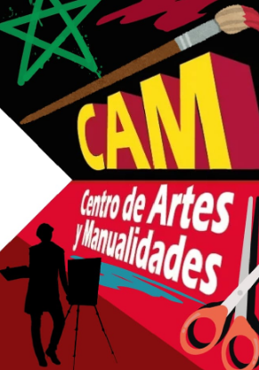
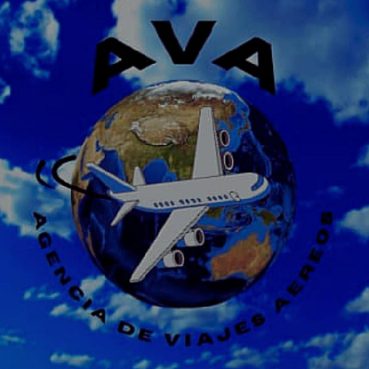
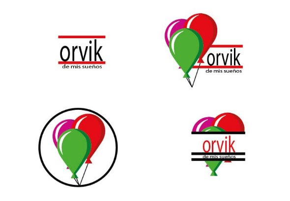

Hola, soy Fabrizio Rodríguez. Nací de 15 de septiembre de 2006, tengo 19 años y soy estudiante del Instituto
Universitario de Tecnología Antonio José de Sucre en la carrera de Diseño Gráfico.Me especializo en el arte moderno, el papercraft, el diseño de logos publicitarios y la recuperación de obras de
arte tradicionales, que son temas centrales en mi trabajo como artista y diseñador. También es mi trabajo ser
alguien destacado con amor a lo que hago y satisfacer las necesidades del cliente.
Contáctame
Contáctame

CAM: Es un logotipo diseñado con Canva que consiste en la creación de un punto de fuga referente a un tema o
especialidad en especifico y con materiales de arte alrededor basado al título.
Contáctame

AVA: Es una imagotipo diseñado en Canva y pasado a Illustrator para crear un sitio web con ayuda de dos
herramientas que son HTML y CSS.
Contáctame

Orvik: Es un imagotipo diseñado en Illustrator a petición de un cliente en una empresa familiar de festejo para
niños de todas las edades y imagotipo fue rediseñado desde distintos tipos para satisfacer al cliente.
Contáctame
JUST DO IT: Es una portada de revista con la marca NIKE diseñada en Illustrator para la elaboración de una
revista de publicidad.
Contáctame
Visiones Creativas y Talento en Acción: Es un trabajo elaborado para la directora del Instituto Universitario de
Tecnología Antonio José de Sucre. La petición consiste en el armazón de un cuadro 3D como cartel de bienvenida a
una galería de arte y dar a conocer las obras de los artistas.
Contáctame
Arte Futurista: Es una obra de arte que consiste en la creación de la estatua de la Dama de la Libertad en
estilo futurista, cubriendo todo su cuerpo y la base de puro metal con polimeros de minerales.
Contáctame
Cuadro 3D PopArt: Es un trabajo que consiste en el armazón de un cuadro 3D tamaño tabloide, recorte de
cartulinas de colores, para juntarlas por capa y pegar una plantilla de acetato.
Contáctame
Tabla Morfológica: Es una obra de arte que consiste en la elaboración de una tabla morfológica en tamaño
tabloide y es pintado con creyones Prismacolor para darle un estilo de arte callejero o urbano.